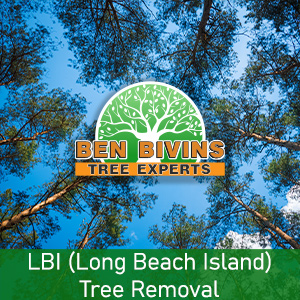
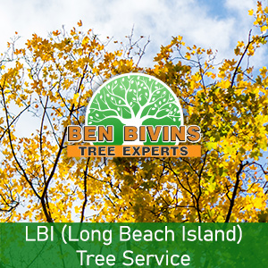

If you are searching for tree removal in LBI or tree service in LBI, look no further. Ben Bivins Tree Service has been delivering top notch tree service to Long Beach Island for many years.
LBI Tree Removal – Trust the Experts

Do you possess dead or unsightly trees that ought to be removed? Tree removal is often a hazardous job that requires the proper equipment and safety protocols. While it can be tempting to remove a tree on your own from your LBI residence, it’s really a decision that puts yourself in jeopardy, without the proper knowledge. There could be numerous reasons why you are considering a tree removal in Long Beach Island:- Tree is hindering too much sunlight on your lawn
- Tree is dead or unhealthy as well as a potential safety hazard
- Tree is overgrown and poses a threat if big limbs drop
- Tree was harmed during a weather event and is beyond the stage of preserving
- You are thinking about renovations that could eventually damage the tree
- Tree is losing too many limbs, leaves, or pine needles
We are a fully insured and qualified tree company. Please don’t take the associated risk of hiring an uninsured tree company or depending upon a friend or family member to accomplish this type of job. Our team is skillfully educated and our company has the proper credentials to make certain your LBI tree removal will be carried out in the safest and most effective way possible. Tree removal requires the usage of serious machinery and hazardous equipment which should only be left to the pros. Leave it to Ben Bivins Tree Experts! Call us for an estimate on your Long Beach Island tree removal.
Looking for Tree Service in Long Beach Island NJ?

We perform all aspects of LBI tree service. A few of these services include:- Tree Trimming – Are trees in your yard overgrown? Is your lawn lacking sunlight because of an overgrown tree? Trimming a tree’s branches can make a big difference and could allow you to keep a tree you otherwise considered eliminating.
- Pruning – Keep the trees happy and healthy. Pruning involves evaluating a tree’s health and deciding to remove branches selectively to optimize its health and sustainability.
- Crown Reduction – We are able to decrease the size of your tree’s cover using this process. Our crew will evaluate your tree and make suggestions to remove particular limbs which will scale back canopy cover.
- Emergency Tree Service – Have you got a downed tree that needs prompt attention? Is there a tree which is on the verge of causing harm if not dealt with right away? You might be a prospect for emergency tree service.
If you’re a LBI resident requiring tree service, Call. Appointment time varies according to weather, season and our current work load. We will provide you with a quotation and inform you of date ranges available for service after assessing your specific needs.
Your Supplier for LBI Firewood
It’s understandable that a Long Beach Island tree removal business may have a surplus of firewood! If you are in search of firewood for a wood burning stove or fireplace, contact Ben Bivins Tree Experts today. Firewood availability can vary all through the year.